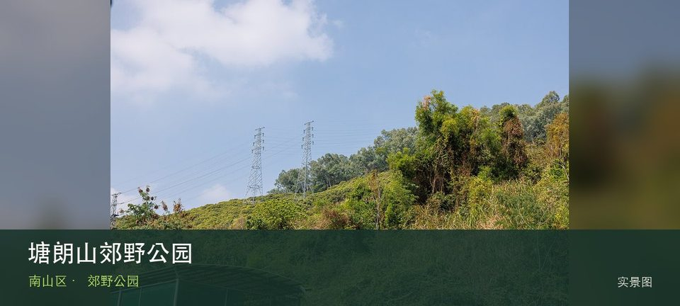

适合谁
适合有基础步行体力、愿意按天气调整路线的人；行动不便者应只选择平缓开放段。

SHENZHEN GUIDE · 070
桃源 · 郊野公园
塘朗山郊野公园位于桃源龙珠片区，最高点塘朗顶与盘山道路、山林支路组成靠近城区的郊野系统，短距离也有持续爬升和湿滑风险。现场的空间线索集中在塘朗顶城市远眺和盘山步道，把两者连起来看，才不会只剩一个笼统印象。现场不必追求一次走完，先在塘朗顶城市远眺与盘山步道之间确定主线，再按体力、日照和天气保留折返方案。山地、滨水或林下路面会随降雨改变，当天预警和开放边界始终比旧轨迹更优先。
WHY GO
适合有基础步行体力、愿意按天气调整路线的人；行动不便者应只选择平缓开放段。
把塘朗山郊野公园拆成两段：先看塘朗顶城市远眺，有余力再看盘山步道；若开放范围与旧攻略不一致，以现场标识为准。
公共交通先到桃源龙珠片区，再以塘朗山郊野公园公开参观入口为终点；多入口地点须按计划游线选择入口，并预先锁定返程站点。
导航至塘朗山郊野公园官方开放入口配套或邻近正规公共停车场；周末满位即改乘公共交通，不在绿道口、村道或消防通道临停。
10 月至次年 4 月较舒适；4—9 月湿热且雷雨集中，强降雨前后不进入山脊、溪谷、陡坡或低洼路段。
NEARBY IDEAS
 编辑配图·非现场实景
编辑配图·非现场实景
深圳市野生动物园是西丽湖片区的大型动物主题景区，适合把动物观察、科普教育和户外步行组合成一日行程。
 编辑配图·非现场实景
编辑配图·非现场实景
凤凰径位于凤凰山至马鞍山的跨区山林长线，约80公里、6段的跨区远足径串联凤凰山、石岩湿地、观澜森林、光明森林和罗田森林等山林节点。
 授权实景图
授权实景图
西丽湖位于西丽大学城与山地交界，湖区、校园和麒麟山等山体构成较安静的城郊景观，但公开道路、校园门禁和水库管理边界必须区分。